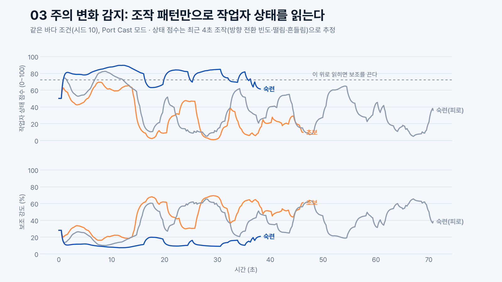
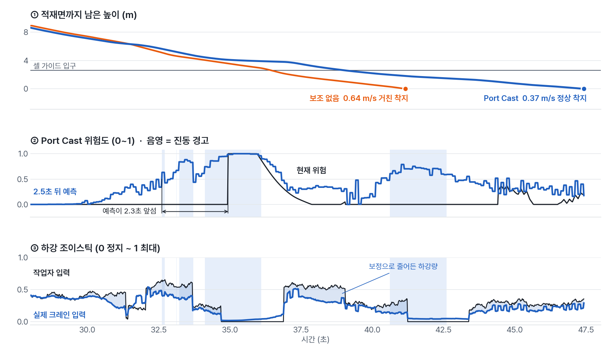

SSAFY 해양 X AI 아이디어 해커톤
기획 배경
항만 하역 현장에서는 매년 300명 넘는 재해자가 나오고, 그중 34.9%가 근속 1년 미만입니다(해양수산부 2022~2024). 자동화가 진행돼도 예외 상황 대응과 최종 판단은 여전히 크레인 작업자가 맡습니다. 팀은 작업자의 조이스틱 조작과 작업 환경을 실시간으로 읽어, 숙련도와 상태에 맞춰 보조 수준을 LOW·MID·HIGH 세 단계로 조절하는 AI를 제안했습니다.
시뮬레이션 설계
STS 크레인이 선박 위 셀 가이드에 컨테이너를 내려놓는 착지 구간을 2D로 재현했습니다. 트롤리·와이어·컨테이너의 진자 운동, 선박의 상하·좌우 흔들림, 돌풍을 넣고 0.02초 단위로 최대 90초까지 계산합니다. 착지 속도가 0.6 m/s 이상이면 거친 착지, 좌우 오차가 0.35 m를 넘으면 가이드 충돌로 판정합니다.
| 가상 작업자 | 반응 속도 · 손떨림 | 조작 방식 |
|---|---|---|
| 초보 | 0.55초 · 큼 | 남은 거리만큼 밀다가 늦게 감속하고, 정렬이 덜 된 상태로 내립니다. |
| 숙련 | 0.18초 · 작음 | 미리 감속하고 선박 움직임을 따라가며, 갑판이 올라올 때는 기다립니다. |
| 피곤한 작업자 | 0.35초부터 작업이 길어질수록 느려짐 · 중간 | 숙련자와 같은 방식이지만 반응이 늦고 손떨림이 큽니다. |
| 보조 방식 | 동작 |
|---|---|
| A 보조 없음 | 작업자 혼자 조작합니다. |
| B 현재 위험 알림 | 지금 위험이 감지되면 진동합니다. 기존 연구에서 쓰는 방식입니다. |
| C Port Cast | 2.5초 뒤 위험을 예측해 진동으로 경고하고, 숙련자 방향으로 조작을 보정하고, 하강 속도를 제한합니다. |
작업자 3명 × 보조 방식 3가지 × 해상 조건 60개 = 총 540회를 실행했습니다.
AI 모델
최근 4초 조작의 방향 전환 빈도·떨림·흔들림으로 작업자 상태 점수(0~100)를 냅니다. 72점 이상이면 숙련자로 보고 보조를 끄고, 점수가 낮을수록 보정을 강하게 겁니다.
초보·숙련 구분 정확도 90%
크레인·선박 상태 9개와 직전 조작값으로 2.5초 뒤까지의 최대 위험도를 예측합니다. 실제로 일어난 결과를 정답으로 학습했습니다.
위험 구간 판별 AUC 0.995 · R² 0.911
같은 상황에서 숙련자가 넣었을 조이스틱 값을 냅니다. 초보·피곤한 작업자가 실제로 겪은 상황에도 숙련자 조작을 정답으로 붙여 학습했습니다.
숙련자 조작 재현도 R² 0.976

숙련자는 상태 점수가 기준선 위에 머물러 보조가 거의 꺼지고, 초보와 피곤한 작업자는 조작이 흔들릴 때마다 보조가 강해집니다. 피곤한 작업자를 따로 학습시키지는 않았습니다.
착지 과정 분석
발표에서 결과 수치보다 먼저 보여준 비교 영상의 마지막 장면입니다. 해상 조건과 작업자는 같습니다.

비교 영상과 같은 실험(피곤한 작업자, 해상 조건 #2)을 시간 순서로 펼쳤습니다. 컨테이너를 옮기는 0~28초 구간은 생략했습니다.
예측 위험도가 현재 위험도보다 2.3초 먼저 0.5를 넘었고, 이때 진동 경고가 울렸습니다. 작업자는 진동을 느끼고 하강을 멈췄습니다.
현재 위험도는 0.05 이하였지만 예측 위험도가 0.79까지 오르면서 진동 경고와 하강 제한이 작동했습니다.
보조 없음은 0.64 m/s로 거친 착지, Port Cast는 0.37 m/s로 정상 착지했습니다. 대신 착지까지 6.2초가 더 걸렸습니다.
결과/성과
60회 결과가 우연이 아닌지 확인하려고, 피곤한 작업자 기준으로 보조 없음과 Port Cast를 각각 1,000회 다시 실행했습니다.
SSAFY 해양 X AI 아이디어 해커톤
1위 삼성전자
위험 사건 비율 (1,000회)
69.9 → 18.7% 95% CI 16.3~21.3%
초보 정상 착지 (60회)
18 → 78%
숙련자와 초보의 성공률 격차
+52 → −7%p
숙련자는 상태 점수가 높아 보조가 대부분 꺼지기 때문에, 보조 없음과 비슷한 결과가 나옵니다.
해석할 때 유의할 점
배운 점과 개선 방향
데이터가 없는 아이디어를 숫자로 보여주려면, 결과를 바꿀 수 있는 조건을 먼저 고정해야 했습니다. 해상 조건과 작업자를 묶어 두고 보조 방식만 바꿨고, 효과처럼 보이지만 설계 때문에 생긴 숫자(거친 착지 0%)는 성과에서 뺐습니다.
아쉬운 점과 개선 방향
코드: github.com/doyeon-del/port-cast-sim (팀 프로젝트 중 시뮬레이션·효과 검증 파트만 공개)